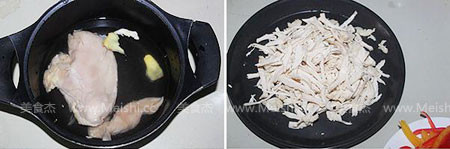

“平时我们熬鸡汤剩下的鸡肉很柴，都不太喜欢吃，我一般都是放些蔬菜用来凉拌或做成沙拉都很好吃，特别是做成沙拉，孩子们都非常喜欢吃，现在菜市场里的鸡都是分割出售，鸡脯肉没有皮，脂肪含量几乎是零，蛋白质又高，可以专门买来煮一下做成鸡肉沙拉，既快手又好吃。”
用料鸡肉沙拉的做法
1.将鸡脯肉放入小汤锅中，放入料酒、生姜和没过鸡肉的清水，大火煮开锅撇去浮末，小火煮十分钟关火
2.捞出鸡肉不烫手时撕成细丝

3.煮鸡肉的时候将红黄彩椒、黄瓜和圆葱都切成细丝，大蒜切成末
4.将沙拉酱、芥末、蒜末、盐、白胡椒粉、白糖都放入一个小碗中，再将柠檬汁挤入碗中拌匀，尝一下味道，感觉适合自己的口味就可以了
5.将鸡肉丝和蔬菜丝都放入一个大碗中，倒入拌好的调味沙拉酱
6.拌匀后就可以装盘了

烹饪技巧
炎热的夏季可以将鸡肉丝和蔬菜丝都提前准备出来放入冰箱冷藏，吃的时候拿出来拌入调味沙拉酱，吃起来更清爽。